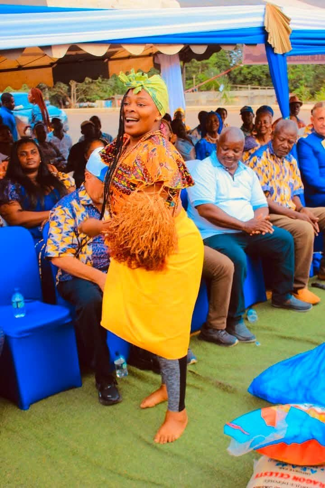
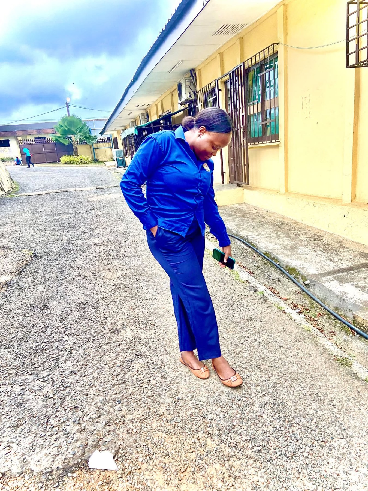
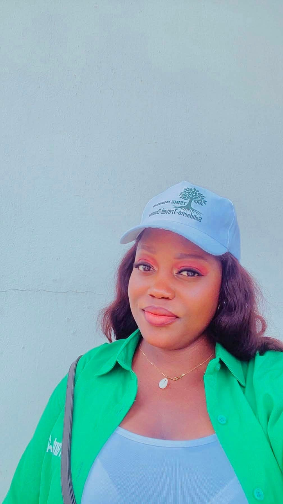
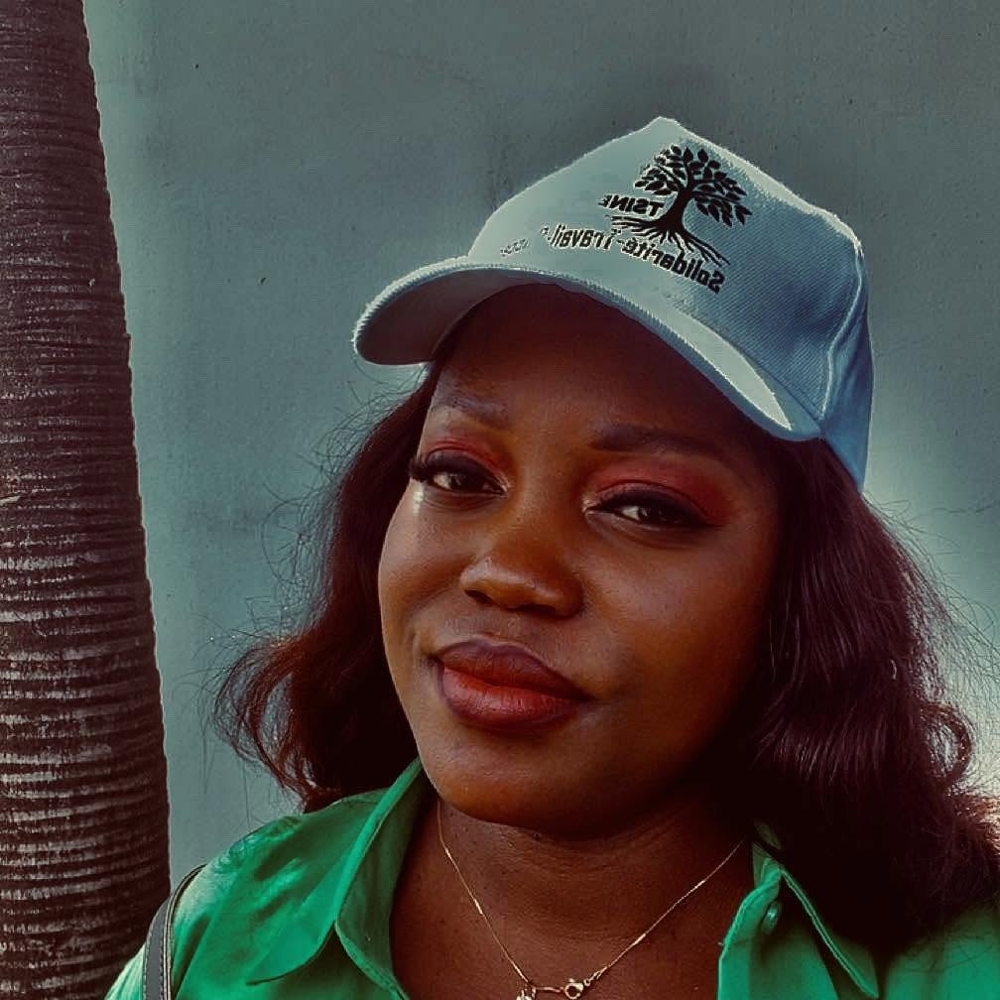

FANTA AYONG
Une voix, une culture, une identité. Découvrez l'univers musical de FANTA AYONG, une artiste qui fait vibrer les sonorités fang.
Une artiste, une histoire.
Originaire de Mitzic, FANTA AYONG est une artiste chanteuse passionnée par la musique depuis son enfance.
Elle grandit à Mitzic, où elle poursuit son parcours scolaire jusqu'à l'obtention de son baccalauréat série B. Elle rejoint ensuite Libreville pour ses études supérieures à l'IUSO, où elle obtient une licence professionnelle.
À travers son univers musical, elle met en valeur les sonorités fang et souhaite faire découvrir sa musique à un public toujours plus large.
La Musique

Ses Vidéos
Ening Mindzoug
Douma · 2016
La Galerie





Faites vivre l'expérience
Vous souhaitez accueillir FANTA AYONG lors d'un événement, d'un festival, d'une cérémonie ou d'un spectacle ? Contactez son équipe pour toute demande de prestation.
Demander une réservationRéservation & Contact
Organisons votre événement.
Pour les spectacles, festivals, cérémonies, partenariats et collaborations, contactez FANTA AYONG.
WhatsApp :
+241 74 50 18 98
YouTube :
FANTA AYONG Officiel
Facebook :
FANTA AYONG